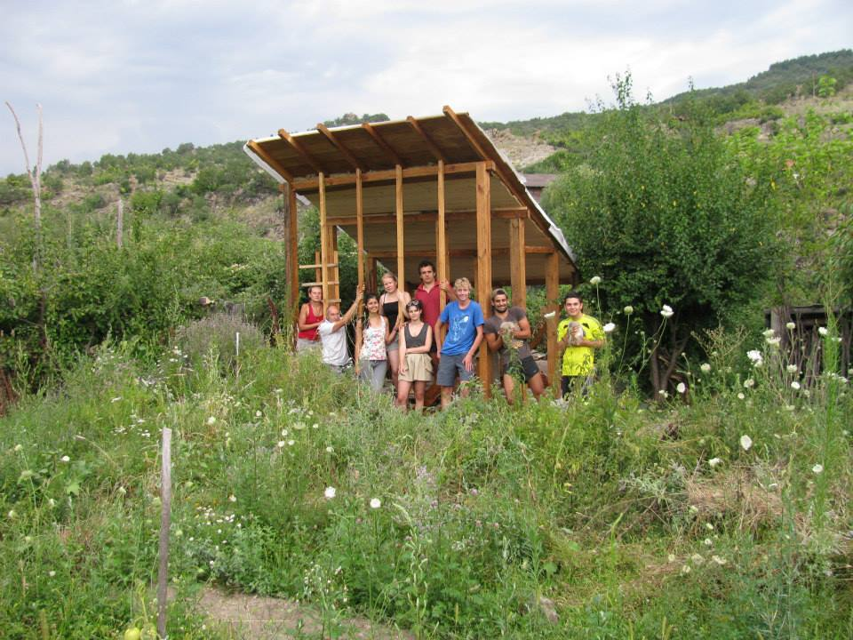
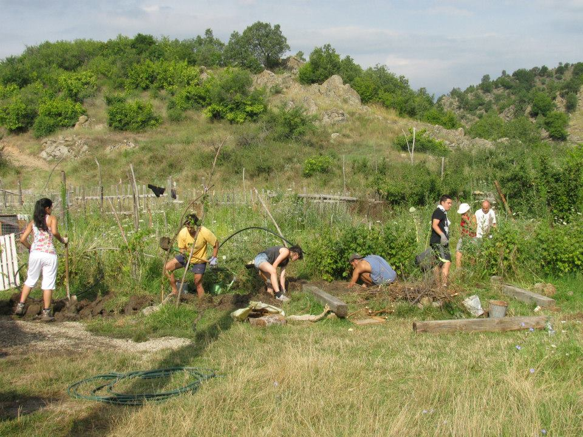
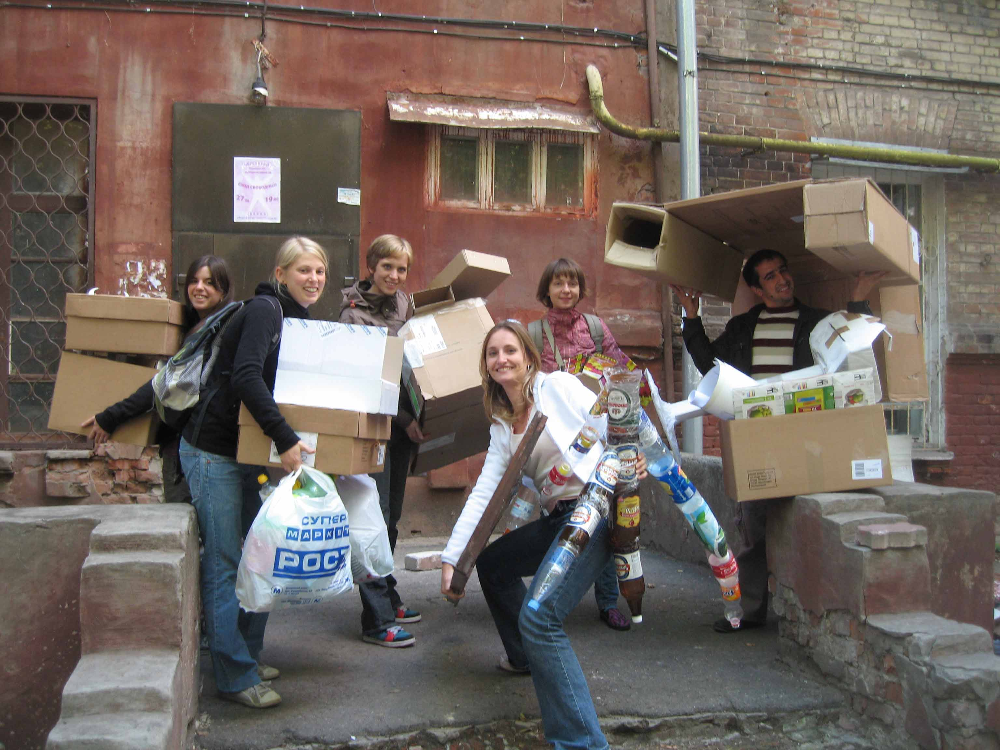
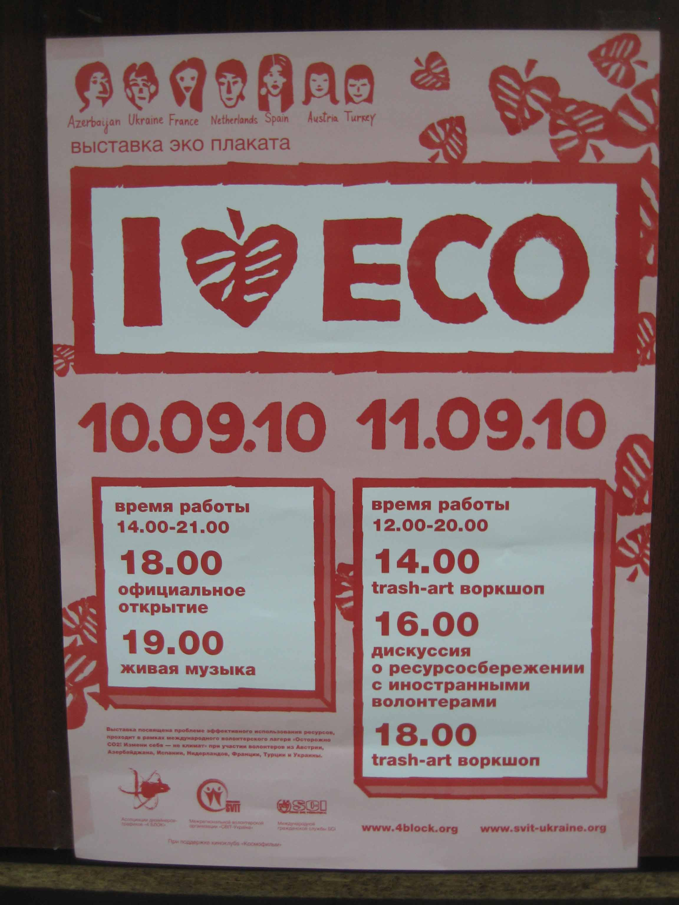

Projecten
Overig
Verslagen Europa, Amerika en Azië
Environmental Project - Bulgaria
by Joost van Proosdij, September 2014
Nanutre School Vlahi, Bulgaria
This year I had my first workcamp, and my first time I travel on my own. It was a bit scary but it was a awesome experience. I met a lot of new people, with great stories and a different culture. This changed me a bit. The workcamp and the travel had ups and downs, but together we changed the downs into ups!
It was great to work together with people from other countries, with the same goal, building a greenhouse! It was a great experience I never forget! I think it won't be my last workcamp!

Project Report Free Kids Village
 by Xiaofeng Qian, April 2012
by Xiaofeng Qian, April 2012
This is a report for my voluntary project in Japan for the month of April, and it will give you a brief message about why I was there, what I was doing and how the project went.
I am grateful for the remarkable arrangement of my current employer Collis BV in Netherlands for employees working for the company already five years or longer. This arrangement allowed me to volunteer for any non-profit organization worldwide for a full month. I chose to work at Free Kids Village which locates at a rural area in Takato Ina, Japan. My contact for this project is through SCI Japan and VIA-Netherlands which both are a branch under the charity organization Service Civil International.
Meer projectverslagen
Hier op de SCI-site vind je meer verslagen, in het Engels, van projecten die binnen en buiten Europa plaatsvonden.Change yourself, not the climate, Warning CO2
Verslag van een vrijwilligersproject in Kharkov, Oekraine
Campo Carlo Tanja - 2009
Campo Carlo, Varzi, Praglasso IT-SCI 6.4
door Tanja Sikkens
Het was zondagochtend en ik ging vanuit Milaan met de trein om 9 uur ’s ochtend naar Volghera, een stadje of een dorpje ergens in de heuvels....toch? De trein verliet de grote stad, in het landschap aangekomen was ik enigszins verbaast over de vlakte. Waar waren de bergen, ik ging toch naar de bergen?
More Articles...